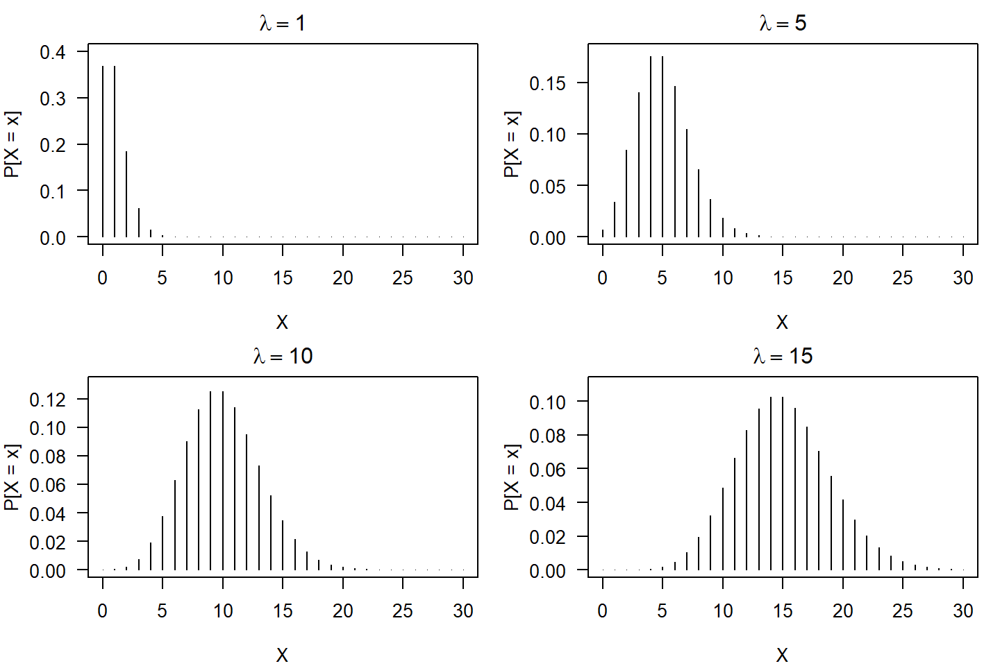

Distribuição de Poisson
Introdução
Uma variável aleatória discreta que pode ser expressar a probabilidade de uma série de contagens de eventos ocorrer, de forma independente, num certo período de tempo segue o comportamento probabilístico da chamada distribuição de Poisson. Esse modelo de probabilidade foi proposto pelo matemático e físico francês Siméon Denis Poisson em 1838 no seu tratado sobre probabilidade em julgamentos sobre matérias criminais e civis.
Em seu trabalho, Poisson considerava \(N\) variáveis aleatórias que contabilizavam o número de ocorrências de um certo fenômeno durante um intervalo de tempo de determinada duração. Muitas aplicações do modelo probabilístico de Poisson iniciaram-se em fenômenos físicos, como por exemplo, no estudo do número de impactos de asteróides maiores que um certo tamanho desde uma certa data de referência. Hoje em dia, esse modelo de probabilidade possui aplicações em praticamente todas as áreas da ciência em que o objetivo seja o estudo de dados de contagens.
A caracterização do modelo de Poisson pode ser observado a partir da realização de um experimento nas nas seguintes condições:
As contagens (ocorrências) são independentes;
As ocorrências são aleatórias;
A variável aleatória \(X\) é o número de contagens de um evento ao longo de algum intervalo (de tempo ou espaço).
Portanto, \(X\) poderá assumir os valores \(0,1,\ldots\) (sem limite superior).
Distribuição de Poisson
Considere então agora que o fenômeno de interesse é observado em um intervalo contínuo (tempo, espaço,\(\ldots\)), de tamanho \(t\). O número de eventos que ocorrem no intervalo fixo \([0,t)\) é uma variável aleatória \(X\) (“número de sucessos”). Pode-se, então, inicialmente tentar aproximar esses eventos à um ensaio de Bernoulli, criando \(n\) subintervalos muito pequenos, de forma que este processo satisfaça as seguintes condições:
Em um período de tempo muito curto, somente 1 ou 0 eventos podem ocorrer (dois ou mais eventos são impossíveis);
O valor esperado de sucessos, \(\displaystyle np\) , é constante para qualquer tamanho do intervalo. Vamos denotar essa constante de \(\displaystyle \lambda = np\);
Dessa forma, a probabilidade de sucesso de um evento será \(\displaystyle p = \frac{\lambda}{n}\);
Cada subintervalo é um ensaio de Bernoulli independente.
Assim, um experimento que satisfaça as condições (i - iv) é chamado de processo de Poisson.
Note que se as condições acima forem satisfeitas, e se aumentarmos o número de subintervalos (\(n\)), então a probabilidade \(p\) deverá diminuir para que \(\lambda = np\) permaneça constante.
Dessa forma, estamos interessados em determinar a distribuição de probabilidade de uma variável aleatória \(X\), tal que \(\displaystyle X \sim \mbox{binomial}(n, p = \lambda/n)\) no limite \(\displaystyle n \rightarrow \infty\) e \(\displaystyle p \rightarrow 0\), isto é,
\[ \begin{eqnarray} P[X = x] &=& \ \lim_{n \rightarrow \infty} {n \choose x}\,p^{x}\,(1-p)^{n-x} \\\\ &=& \ \lim_{n \rightarrow \infty} \frac{n!}{x!\,(n-x)!}\,\left(\frac{\lambda}{n}\right)^{x}\,\left(1 - \frac{\lambda}{n}\right)^{n-x} \\\\ &=& \ \frac{e^{-\lambda}\,\lambda^x}{x!} \end{eqnarray} \]
Definição:
Uma variável aleatória \(X\) segue distribuição de Poisson, a partir de um processo de Poisson, se sua função de probabilidade for representada por
\[ \begin{eqnarray*} P(X=x)=\frac{e^{-\lambda}\,\lambda^{x}}{x!},\quad \quad \quad x=0,1,\ldots \end{eqnarray*} \] em que, o parâmetro \(\lambda > 0\) representa a taxa média de ocorrência das contagens por unidade de medida (tempo, por exemplo).
Exemplos:
Número de carros que passam por um cruzamento durante uma certa hora do dia;
Número de defeitos por unidade (\(m\), \(m^2\), \(m^3\)) por peça fabricada;
Número de microorganismos em suspensão encontrados em uma solução aquosa;
Número de mortes por ataque cardíaco por ano, em uma cidade;
Número de animais de uma espécie rara, existentes em uma determinada área geográfica.
Esperança e Variância: \(\mbox{E}(X) = \mbox{Var}(X) = \lambda\)
Notação: \(X \sim \text{Poisson}\,(\lambda)\).
par(mfrow=c(2,2), mar=c(4,4,2,1), mgp=c(3,1,0), las=1)
plot(0:30, dpois(x = 0:30, lambda = 1), type = "h",
xlab = "X", ylab = "P[X = x]", main = expression(lambda == 1),
ylim = c(0,.4))
plot(0:30, dpois(x = 0:30, lambda = 5), type = "h",
xlab = "X", ylab = "P[X = x]", main = expression(lambda == 5),
ylim = c(0,.18))
plot(0:30, dpois(x = 0:30, lambda = 10), type = "h",
xlab = "X", ylab = "P[X = x]", main = expression(lambda == 10),
ylim = c(0,.13))
plot(0:30, dpois(x = 0:30, lambda = 15), type = "h",
xlab = "X", ylab = "P[X = x]", main = expression(lambda == 15),
ylim = c(0,.11))
Exercícios
- O número de partículas gama emitidas por segundo, por certa substância radioativa é uma variável aleatória com média de 3 partículas/segundo. Se um instrumento registrador torna-se inoperante quando há mais do que quatro partículas por segundo, determine:
Qual distribuição de probabilidade segue essa variável aleatória?
Qual é a probabilidade de duas partículas gama serem emitidas por segundo?
Qual é a probabilidade do instrumento registrador ficar inoperante em um dado segundo?
Qual é o desvio-padrão dessa variável aleatória?
Solução
- , Como \(X\) é o número de partículas gama emitidas por segundo, então observa-se um processo de contagem, de forma independente, num intervalo de tempo com uma taxa \(\lambda = 3\) partículas por segundo.
Portanto, , \(X \sim \text{Poisson}\ (\lambda)\).
\[P(X = 2) = \frac{e^{-\lambda}\,\lambda^x}{x!} = \frac{e^{-3} \ 3^2}{2!} = 0.2240\]
\[ \begin{eqnarray*} P(\text{inoperante}) &=& \ P(X > 4) \ = \ 1 - P(X \leq 4) \\\\ &=& \ 1 - [P(X = 0) + P(X = 1) + P(X = 2) + P(X = 3) + P(X = 4)] \\\\ &=& \ 1 - \ \left[\frac{e^{-3}\,3^{0}}{0!} \ + \ \frac{e^{-3}\,3^1}{1!} \ + \ \frac{e^{-3}\,3^2}{2!} \ + \ \frac{e^{-3}\,3^3}{3!} \ + \ \frac{e^{-3}\,3^4}{4!}\right] \\\\ &=& \ 1 - \ (0.0497 \ + \ 0.1493 \ + \ 0.2240 \ + \ 0.2240 \ + \ 0.1680) \\\\ &=& \ 0.1847 \end{eqnarray*} \]
- Como \(X\) segue distribuição de Poisson, então
\[\sigma_{X} \ = \ \sqrt{\mbox{Var}(X)} \ = \ \sqrt{\lambda} \ = \ \sqrt{3} = 1.7320 \ \ \text{partículos\segundo} \].
- Falhas ocorrem ao acaso ao longo do comprimento de um fio delgado de cobre. Suponha que o número de falhas segue uma distribuição de Poisson com uma média de \(2,3\) falhas por milímetro. Determine a probabilidade de:
Existir exatamente 2 falhas em 1 mm de fio.
Existir 10 falhas em 5 mm de fio.
Existir pelo menos uma falha em 2 mm de fio.
Ocorrer no máximo 2 falhas em 1 mm de fio.
- Contaminação é um problema na fabricação de discos ópticos de armazenagem. Neste sentido, um estudo tem por interesse investigar o número de partículas de contaminação que ocorrem em um disco óptico por \(cm^2\) de superfície. Sabe-se que o número médio de partículas por \(cm^2\) de superfície média é 0,1. A área do disco sob estudo é 100 \(cm^2\). Determine a probabilidade de que no mínimo três partículas ocorram na área do disco sob estudo.

Este conteúdo está disponível por meio da Licença Creative Commons 4.0